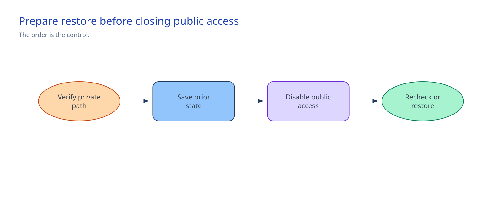

Chapter 5 of 6
Implement#
1. Complete the network definition#
Set the five service IDs and the approved network IDs in artifacts/environments/sandbox.bicepparam. Configure these endpoint subresources and zones:
| Service | Subresource | Private DNS zone |
|---|---|---|
| Foundry | account | privatelink.cognitiveservices.azure.com |
| Foundry | account | privatelink.openai.azure.com |
| Foundry | account | privatelink.services.ai.azure.com |
| Storage | blob | privatelink.blob.core.windows.net |
| Azure AI Search | searchService | privatelink.search.windows.net |
| Cosmos DB | Sql | privatelink.documents.azure.com |
| Key Vault | vault | privatelink.vaultcore.azure.net |
Record the customer firewall repository or policy reference in the approved network design.
2. Run preflight and review what-if#
Set the approved scope and operator IDs:
PowerShell
$approvedSubscriptionId = $env:AZURE_SUBSCRIPTION_ID
$resourceGroup = "approved-session-02-resource-group"
$networkOperatorObjectId = "network-operator-object-id"
$dnsOperatorObjectId = "dns-operator-object-id"
$dnsScopeResourceIds = @(
"/subscriptions/$approvedSubscriptionId/resourceGroups/approved-dns-resource-group"
)
$cutoverChangeReference = "approved-change-reference"Bash
approved_subscription_id="${AZURE_SUBSCRIPTION_ID:-}"
resource_group="approved-session-02-resource-group"
network_operator_object_id="network-operator-object-id"
dns_operator_object_id="dns-operator-object-id"
dns_scope_resource_id="/subscriptions/$approved_subscription_id/resourceGroups/approved-dns-resource-group"
cutover_change_reference="approved-change-reference"PowerShell
.\scripts\preflight.ps1 `
-ApprovedSubscriptionId $approvedSubscriptionId `
-ResourceGroupName $resourceGroup `
-NetworkOperatorObjectId $networkOperatorObjectId `
-DnsOperatorObjectId $dnsOperatorObjectId `
-DnsScopeResourceId $dnsScopeResourceIdsBash
./scripts/preflight.sh \
--approved-subscription-id "$approved_subscription_id" \
--resource-group-name "$resource_group" \
--network-operator-object-id "$network_operator_object_id" \
--dns-operator-object-id "$dns_operator_object_id" \
--dns-scope-resource-id "$dns_scope_resource_id"Repeat the DNS scope argument for separate zone-level assignments. Preflight rejects unresolved values, wrong scopes, missing roles or providers, mismatched service IDs, Bicep errors, and a failed resource-group what-if.
The preview must leave the approved VNet, route table, and subnets unchanged. Expect seven zones and links plus five private endpoints. Stop on a delete, replacement, Foundry deployment, hub change, unexpected resource group, or public-access change.
3. Deploy private endpoints and DNS#
PowerShell
$artifacts = Resolve-Path .\artifacts
az deployment group create `
--resource-group $resourceGroup `
--name rvas-s03-private-network `
--template-file "$artifacts\infra\network\main.bicep" `
--parameters "$artifacts\environments\sandbox.bicepparam" `
--only-show-errorsBash
artifacts_dir="$(cd ./artifacts && pwd)"
az deployment group create \
--resource-group "$resource_group" \
--name rvas-s03-private-network \
--template-file "$artifacts_dir/infra/network/main.bicep" \
--parameters "$artifacts_dir/environments/sandbox.bicepparam" \
--only-show-errorsService owners approve pending private endpoint connections. Public access stays unchanged.
Link the authoritative zones to approved client or resolver VNets. For hybrid DNS, forward the public service zones through an Azure-side DNS forwarder or Azure Private Resolver.
Firewall administrators update the named customer firewall source. Include the Microsoft Entra access rule required by Agent Service and the approved feature-specific destinations. Do not add a blanket internet rule. Bing Grounding, Websearch, and SharePoint Grounding still use public endpoints in an isolated Foundry environment; use other approved tools when every tool call must stay private.
4. Check the private path and cut over#
Run the connectivity check from the approved execution host:
PowerShell
.\scripts\connectivity-check.ps1 `
-ParameterPath .\artifacts\environments\sandbox.bicepparamBash
./scripts/connectivity-check.sh \
--parameter-path ./artifacts/environments/sandbox.bicepparamContinue only when all configured FQDNs resolve to RFC 1918 addresses and accept TCP 443.

Run the cutover script from the same host:
PowerShell
.\scripts\public-access-cutover.ps1 `
-ApprovedSubscriptionId $approvedSubscriptionId `
-ResourceGroupName $resourceGroup `
-CutoverChangeReference $cutoverChangeReference `
-ConfirmPriorStateRecorded `
-ConfirmBash
./scripts/public-access-cutover.sh \
--approved-subscription-id "$approved_subscription_id" \
--resource-group-name "$resource_group" \
--cutover-change-reference "$cutover_change_reference" \
--confirm-prior-state-recorded \
--confirmThe script validates the five unique resource IDs, checks connectivity, and displays the five prior public-access states. Copy those states to the approved change record before confirmation. It sets each service to Disabled, confirms that state, then merges networkControlSession=02-private-networking-dns without replacing existing tags. The marker identifies a verified update.
If an update fails, inspect the change record and identify which services changed. Start the manual restore procedure instead of rerunning the cutover blindly.